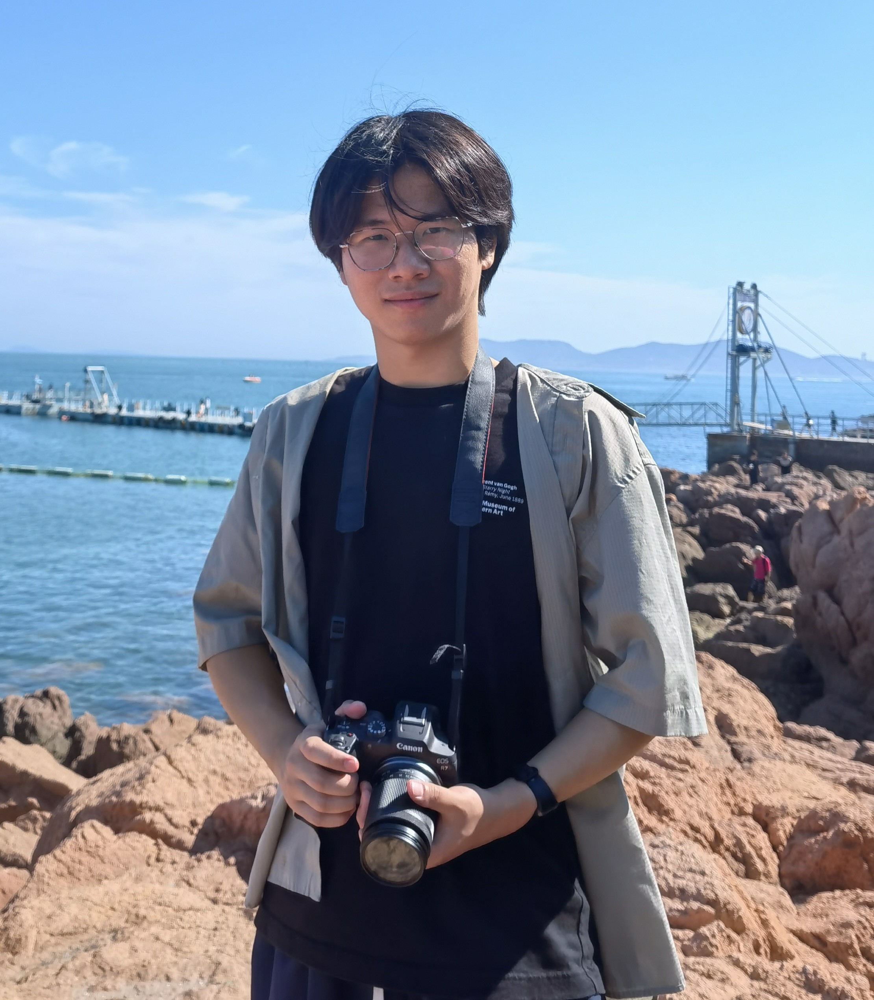

Studying earthquake rupture processes through finite-fault model, near fault observation and dynamic modeling.

I am a PhD student in the Graduate Division of Earth and Environmental Sciences at The Chinese University of Hong Kong, advised by Prof. Hongfeng Yang. My research focuses on seismology, particularly earthquake rupture processes, finite-fault inversion, and strong ground motion.
Previously, I received my B.S. in Geophysics from Wuhan University (advisor: Prof. Guoyan Jiang), where I completed my undergraduate thesis on the finite-fault inversion of the 2025 Myanmar earthquake. I also conducted research on the 2023 Xingwen Ms4.9 induced earthquake sequence, investigating its seismogenic structure and rupture characteristics through InSAR data and fault inversion, which was published in Earthquake Science.
I am passionate about understanding earthquake physics and contributing to seismic hazard assessment. If you share similar interests, feel free to reach out!
If you share similar research interests or have any questions, feel free to reach out. I'm always open to discussions and collaborations.
guanyumao@whu.edu.cn